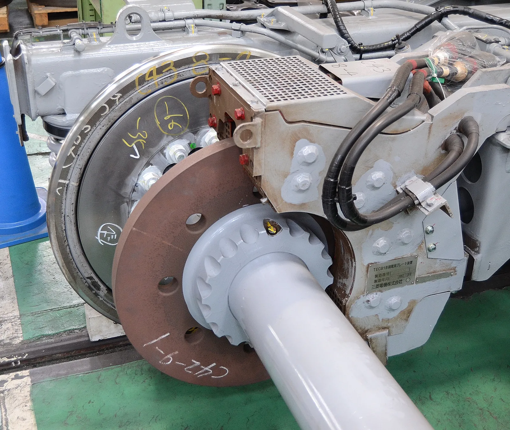

Lenz's law and eddy currents
Why does a strong magnet take several seconds to fall through a copper tube, although copper is not magnetic and an ordinary object falls the same distance in less than a second?
Prior knowledge
- When the magnetic flux through a closed conducting loop changes, an induced voltage $e = -N \Delta\Phi : \Delta t$ and an induced current appear in the loopchapter Electromagnetic induction
- A current-carrying conductor or current loop is itself a magnet with a north and a south polechapter Magnetic field of a wire and a coil
Think about it
When a strong neodymium magnet is dropped into a vertical copper tube one metre long, it does not come out straight away. Several seconds pass, and if you look into the tube from above, you can see the magnet drifting down slowly and steadily. Yet the magnet does not stick to the wall of the tube, and a steel nut of the same size falls through the same tube in the blink of an eye.
What slows the magnet although nothing touches it, and where does the energy of its fall go?
Optional Recall: when does an induced voltage appear?
Predict
Prediction 1: plastic, aluminium and copper tubes
More predictions 1 question
Prediction 2: a copper tube with a slit
Investigate
Simulation
How to use
Choose a tube and an object and press Drop. On the left you see the tube cut lengthwise. When the magnet falls in a metal tube, violet eddy-current rings appear below and above it, and their thickness shows the size of the braking force. The red arrows are the weight $\overline{G}$ and the braking force $\overline{F}_\text{j}$ on the same scale. The graph shows the distance fallen $y$ as a function of time $t$; the latest drop in each tube stays visible. The energy bars show the decrease in potential energy $\Delta E_\text{p}$, the kinetic energy $E_\text{k}$ and the energy converted into internal energy of the tube $Q$. Record a measurement only when the readout says that the object has fallen through the tube.
Assumptions of the model
The mass of the magnet is $20\,\text{g}$ and the length of the tube $1.00\,\text{m}$; the magnet starts from rest at the upper end of the tube, and the time is measured until it has fallen the length of the tube. The magnet in the picture is not to scale. There is no air resistance and no friction against the wall, and the effect of the ends of the tube is ignored. In a metal tube the braking force in the model is proportional to the speed, $F_\text{j} = k v$. The coefficient $k$ is chosen so that in the copper tube the steady final speed of the magnet is $0.15\,\text{m/s}$, which is of the same order of magnitude as in school drop experiments. The electrical conductivity of aluminium is about $63\,\%$ of that of copper, so $k$ for the aluminium tube is $0.63$ times as large. For the slit tube the model's $k$ is estimated at one tenth of the value for the intact copper tube. The plastic tube and the non-magnetised steel object are not braked. The numbers are values calculated by the model, not measurements.
How the calculation works
The weight $G = mg$ acts on the magnet downwards and the braking force $F_\text{j} = k v$ upwards. As the speed grows, the braking force grows until it equals the weight. Then the magnet falls at a steady final speed
$$v_\text{t} = \frac{mg}{k}$$
The energies are calculated from the distance fallen $y$ and the speed $v$: $\Delta E_\text{p} = m g y$, $E_\text{k} = \tfrac{1}{2} m v^2$ and the energy converted into internal energy of the tube $Q = \Delta E_\text{p} - E_\text{k}$. In the plastic tube the object falls freely: $y = \tfrac{1}{2} g t^2$ and $v = g t$.
Drop an object into a vertical tube one metre long. Change the material of the tube and the object, and compare the falling times, the graph and the energy bars.
Experiment 1: the material of the tube
Test prediction 1. The object is a neodymium magnet; change only the material of the tube. Drop the magnet into the plastic, aluminium and copper tubes and record for each the falling time, the speed at the end and the energy converted into internal energy of the tube.
- Initial state
- tube: plastic tube, object: neodymium magnet
- Kept constant
- object
- Varied
- tube
| tube | $t$ $(\text{s})$ | $v$ $(\text{m/s})$ | $Q$ $(\text{mJ})$ |
|---|
More to investigate 2 tasks
Experiment 2: a slit in the copper tube
Test prediction 2. The object is still a neodymium magnet. Drop it into the intact copper tube and into a copper tube with a lengthwise slit, and record the falling times and the energy converted into internal energy.
- Initial state
- tube: copper tube, object: neodymium magnet
- Kept constant
- object
- Varied
- tube
| tube | $t$ $(\text{s})$ | $Q$ $(\text{mJ})$ |
|---|
Conclusion: what brakes the magnet and where does the energy go?
Write, on the basis of your tables: how do the material of the tube and a slit affect the falling time? Compare the internal energy $Q$ of the copper tube with the decrease in potential energy $mgh = 196.2\,\text{mJ}$ and explain where the energy of the magnet goes and why the magnet falls at a steady speed in the copper tube.
Model answer
In the plastic tube the magnet falls freely in $0.45\,\text{s}$ and has a speed of $4.43\,\text{m/s}$ at the end, and no internal energy is produced. In the aluminium tube the fall takes $4.24\,\text{s}$ and in the copper tube $6.68\,\text{s}$; the final speeds are only $0.24\,\text{m/s}$ and $0.15\,\text{m/s}$. The eddy currents induced in the metal wall brake the magnet, and in copper, which conducts better, the braking is greater. In the slit tube the time shortens to $0.82\,\text{s}$, because the slit cuts the currents that circulate around the tube. The braking still does not disappear: even in the slit tube $Q = 173.9\,\text{mJ}$, because smaller eddy currents still circulate in the wall. In the copper tube $Q = 196.0\,\text{mJ}$, so almost all of the decrease in potential energy, $196.2\,\text{mJ}$, has been converted through the eddy currents into internal energy of the tube. The braking force grows with the speed until it equals the weight; after that the net force is zero and the speed stays the same. The values are calculated by the model.
Assess your own answer
Tick the points your own answer already contains.
Theory
Key idea
The induced current opposes the change
In the chapter Electromagnetic induction, an induced current appeared in a closed conducting loop whenever the magnetic flux through the loop changed. The direction of the current follows one rule, Lenz's law: the direction of the induced current is always such that its own magnetic field opposes the change that induces the current. When the north pole of a magnet is pushed towards a copper ring, the flux through the ring increases. The induced current in the ring turns the ring into a small magnet whose side facing the magnet is a north pole, so the ring repels the approaching magnet. When the magnet is pulled away, the flux decreases. Now the current circulates in the other direction, the side of the ring facing the magnet is a south pole, and the ring attracts the magnet back. In both cases the force of the ring opposes the motion of the magnet.
Lenz's law is conservation of energy
Why could the induced current not help the change? If an approaching magnet pulled the ring towards itself, the magnet would accelerate towards the ring, the flux would change ever faster, the induced current would grow and the pull would strengthen. The kinetic energy of the magnet and the electrical energy of the ring would both increase without anyone doing work: a perpetual motion machine would produce energy from nothing. Conservation of energy rules this out. So the magnet has to be moved by a force that does work against the opposing force of the ring, and this work is what is converted into the electrical energy of the induced current. The current heats the conductor, so the energy ends up as internal energy of the conductor.
Eddy currents
An induced current does not need a separate conducting loop. When the magnetic flux changes in a solid piece of metal, such as a plate or the wall of a tube, closed current loops, eddy currents, appear in the metal. In a copper tube, the flux through the wall below a falling magnet increases and above it decreases. By Lenz's law the eddy current below repels the magnet and the one above attracts it, so both brake the fall. The eddy currents are the greater, the faster the magnet moves, so the braking force also grows with the speed. When the braking force has grown equal to the weight of the magnet, the net force is zero and the magnet falls at a steady speed. No currents appear in a plastic tube, because plastic does not conduct electricity, and a copper tube does not brake a non-magnetised steel object, because its motion does not change the flux through the tube.

The eddy-current brake, the induction hob and the metal detector
In an induction brake, or eddy-current brake, a metal plate or rail moves in a magnetic field, and the eddy currents brake the motion. Copper or aluminium plates fixed under a roller-coaster car pass between strong magnets on the track, and in trains the electromagnets of the brake are close to the rail. The brake does not wear out, because nothing rubs, and it brakes the more strongly, the greater the speed. Near standstill the braking weakens, so a conventional brake is needed for the final stop. In an induction hob, the alternating current in a coil under the glass changes the magnetic field tens of thousands of times a second, and eddy currents heat the base of the pan. Glass does not conduct electricity, so it warms up only because of the hot pan. The coil of a metal detector produces an alternating field, and the field of the eddy currents in a piece of metal in the ground is detected in the coil of the detector.
When eddy currents are a nuisance
Eddy currents always convert electrical energy into internal energy. In the iron core of a transformer or an electric motor, the magnetic field varies continuously, and in a solid core large eddy currents would circulate, heating the core and wasting energy. So the core is built from thin laminations with a non-conducting insulating layer between them. The eddy currents can circulate only inside each narrow lamination, so they stay small. The transformer is discussed further in the chapter The transformer and the transmission of electrical energy. The same idea shows in a copper tube with a lengthwise slit sawn in it: the slit cuts the currents that circulate around the tube, and the magnet falls much faster. Smaller eddy currents still circulate in the wall around the slit, so the braking does not disappear completely.
Lenz's law and energy
The minus sign in the law of induction from the chapter Electromagnetic induction is Lenz's law:
- voltage induced in a coil
- $$e_\text{ka} = -N \frac{\Delta \Phi}{\Delta t}$$
where $e_\text{ka}$ is the average induced voltage (V) in the time interval $\Delta t$, $N$ the number of turns of the loop, $\Delta\Phi$ the change in magnetic flux (Wb) and $\Delta t$ the time taken by the change (s). When the flux changes steadily, the voltage is constant, and it is written simply $e$. The minus sign tells us that the field of the induced current opposes the change in flux. The magnitude is calculated without the sign, and the direction is deduced from Lenz's law.
Conservation of energy tells us where the energy of a falling magnet goes. When the magnet falls a height $h$, its potential energy decreases by $mgh$. Part of it is converted into kinetic energy, and the rest, through the eddy currents, into internal energy $Q$ of the tube:
$$\begin{aligned} mgh &= \tfrac{1}{2} m v^2 + Q \\ Q &= mgh - \tfrac{1}{2} m v^2 \end{aligned}$$
where $m$ is the mass of the magnet (kg), $g = 9.81\,\text{m/s}^2$, $h$ the height of the fall (m), $v$ the speed at the end (m/s) and $Q$ the energy converted into internal energy (J). When the magnet falls at a steady speed, the braking force $F$ equals the weight $mg$. During a time $\Delta t$ the force acts over a distance $v \Delta t$ and does work $F v \Delta t$, so the internal energy increases at the rate
- instantaneous power
- $$P = F v$$
where $P$ is the power (W), $F$ the braking force (N) and $v$ the speed (m/s). The same formula holds for every eddy-current brake: the braking force times the speed is the power at which kinetic energy is converted into internal energy.
Common misconception
Many people think that a copper tube slows the magnet because the magnet sticks to the copper. But copper is not a ferromagnetic material: a magnet at rest does not stick to the wall of a copper tube, and the tube does not brake a non-magnetised steel object of the same shape at all. The braking arises only from motion, because only a moving magnet changes the flux through the tube. Another common mistake is to say that the field of the induced current is always opposite to the field of the magnet. Lenz's law does not oppose the field but its change. When a magnet moves away from a ring, the flux through the ring decreases, and the field of the induced current at the centre of the ring points in the same direction as the field of the magnet, so the ring attracts the magnet.
Summary
- Lenz's law: the magnetic field of the induced current opposes the change that induces the current. A ring repels an approaching magnet and attracts one that is moving away.
- Lenz's law follows from conservation of energy. The work done in moving the magnet is converted into the electrical energy of the induced current and further into internal energy of the conductor: $Q = mgh - \tfrac{1}{2} m v^2$.
- In a changing magnetic field, eddy currents appear in a piece of metal. They brake motion the more strongly, the greater the speed, and the power of the braking is $P = F v$.
- Eddy currents are used in the induction brake, the induction hob and the metal detector. The iron core of a transformer or a motor is built from insulated laminations so that the eddy currents and their energy loss stay small.
Optional Return to your predictions
Compare your predictions with the model's values from the experiments and with Lenz's law. Then return to the opening question: what brakes the magnet in the copper tube, and why does a steel nut fall through the same tube without being braked?
Would you change your prediction?
Examples
Example 1: A magnet in a copper pipe
A student drops a $25\,\text{g}$ neodymium magnet into a vertical copper tube $1.20\,\text{m}$ long and measures that the magnet emerges from the lower end of the tube after $8.0\,\text{s}$. The magnet falls at a steady speed for almost the whole distance. By how much does the internal energy of the tube increase during the fall?
Step 1/7
Given and find. The mass of the magnet is $m = 25\,\text{g}$, the length of the tube, which is the height of the fall, is $h = 1.20\,\text{m}$, the falling time is $t = 8.0\,\text{s}$ and $g = 9.81\,\text{m/s}^2$. We are asked for the increase $Q$ in the internal energy of the tube.
Step 2/7
Principle. Energy is conserved: the eddy currents convert the part of the decrease in potential energy that does not remain as kinetic energy of the magnet into internal energy of the tube. Air resistance is negligible at such a low speed. The speed is almost the same over the whole distance, so it is obtained from the distance and the time.
Step 3/7
Formula solved.
$$\begin{aligned} v &= \frac{h}{t} \\ Q &= mgh - \tfrac{1}{2} m v^2 \end{aligned}$$
Step 4/7
Unit conversions. The mass in kilograms:
The other quantities are in SI units.
Step 5/7
Substitution. First calculate the speed and then the energy:
$$\begin{aligned} v &= \frac{h}{t} \\ &= \frac{1.20\,\text{m}}{8.0\,\text{s}} \\ &= 0.15\,\text{m/s} \\[6pt] Q &= mgh - \tfrac{1}{2} m v^2 \\ &= 0.025\,\text{kg} \cdot 9.81\,\text{m/s}^2 \cdot 1.20\,\text{m} \\ &\quad - \tfrac{1}{2} \cdot 0.025\,\text{kg} \cdot (0.15\,\text{m/s})^2 \\ &= 0.29430\,\text{J} - 0.00028\,\text{J} \\ &= 0.29402\,\text{J} \end{aligned}$$
Step 6/7
Result. The internal energy of the tube increases by about $0.29\,\text{J}$. The result is given to two significant figures, like the mass $25\,\text{g}$ and the time $8.0\,\text{s}$.
Step 7/7
Reasonableness. Only about $0.1\,\%$ of the decrease in potential energy remains as kinetic energy, so almost all the energy heats the tube, as it should in a steady fall. If the mass of the tube is $0.30\,\text{kg}$, the specific heat capacity of copper, $385\,\tfrac{\text{J}}{\text{kg}\cdot\text{K}}$, gives a temperature rise of only about $0.003\,\text{K}$: that is why the tube does not feel warm.
Optional Example 2: Find the error
Example 3: Apply to a new situation: the brake of a roller coaster
On the final straight of a roller coaster, copper plates fixed under the car pass between strong permanent magnets. The eddy currents slow the $2.4\,\text{t}$ car from a speed of $25\,\text{m/s}$ to a speed of $10\,\text{m/s}$ over a horizontal distance of $30\,\text{m}$. Other resistances are ignored.
What is the average braking force? Give your answer in kilonewtons.
Hint 1: a guiding question
Where does the kinetic energy lost by the car go? Which force does work over the braking distance?
Hint 2: what is the connection
The work done by the braking force equals the decrease in kinetic energy: $F s = \tfrac{1}{2} m v_1^2 - \tfrac{1}{2} m v_2^2$.
Hint 3: an intermediate step
Solve for the force: $F = \dfrac{m (v_1^2 - v_2^2)}{2 s}$, where $m = 2.4 \cdot 1000\,\text{kg}$, $v_1 = 25\,\text{m/s}$, $v_2 = 10\,\text{m/s}$ and $s = 30\,\text{m}$.
Show the solution
Given
mass of the car $m = 2.4\,\text{t}$, initial speed $v_1 = 25\,\text{m/s}$, final speed $v_2 = 10\,\text{m/s}$, braking distance $s = 30\,\text{m}$
Find
the average magnitude $F$ of the braking force in kilonewtons
Principle
The track is horizontal and other resistances are ignored, so only the braking force of the eddy currents does work. Energy is conserved: the work $F s$ of the force equals the decrease in kinetic energy, and the eddy currents convert this energy into internal energy of the copper plates.
Formula
$F s = \tfrac{1}{2} m v_1^2 - \tfrac{1}{2} m v_2^2$, so $F = \dfrac{m (v_1^2 - v_2^2)}{2 s}$
Conversions
Finally $1\,\text{kN} = 1000\,\text{N}$.
Substitution
so
Answer
$21\,\text{kN}$
Two significant figures like the mass $2.4\,\text{t}$ and the speeds.
Reasonableness
The deceleration is $$\begin{aligned} 21\,000\,\text{N} : 2400\,\text{kg} &\approx 8.8\,\text{m/s}^2\text{,} \end{aligned}$$$$\begin{aligned} &21\,000\,\text{N} : 2400\,\text{kg} \\ &\approx 8.8\,\text{m/s}^2\text{,} \end{aligned}$$ a little less than $g$, which is strong braking but tolerable for a person. Of the kinetic energy, $630\,\text{kJ}$ is converted into internal energy of the plates, so the plates warm up with every braking.
Review the chapter's concepts
Cards you mark Review later collect in your review deck.
- Lenz's law
- An induced current opposes the change that caused it.
Exercises
The exercises for this lesson are still being checked. They will appear here when the check is done.
Test and assess
1. Reflection task
Answer on your own first and only then open the answer.
- A bar magnet is pulled upwards, away from a copper ring lying on a table. Does the ring repel or attract the magnet, and why?
Answer
It attracts it. The flux through the ring decreases, and by Lenz's law the induced current opposes the decrease: the side of the ring facing the magnet becomes the opposite of the nearest pole of the magnet, so the ring attracts the magnet as it moves away.
- Why is the iron core of a transformer built from thin laminations insulated from each other and not made from one solid piece of iron?
Answer
The alternating magnetic field induces eddy currents in the iron core, and they convert electrical energy into internal energy of the core. The insulating layers cut the large current loops, so the currents circulate only inside the narrow laminations, stay small and the energy loss is reduced.
2. Concept task: A ring and a magnet
3. Calculation task: Calculate: heating power
An $18\,\text{g}$ magnet falls in a vertical aluminium tube at a steady speed of $0.24\,\text{m/s}$.
At what rate does the internal energy of the tube increase? Give your answer in milliwatts.
Hint 1: a guiding question
The speed is steady. What is the braking force then?
Hint 2: what is the connection
At a steady speed the braking force equals the weight, $F = m g$, and the power is $P = F v$.
Hint 3: an intermediate step
$$\begin{aligned} P &= 0.018\,\text{kg} \cdot 9.81\,\text{m/s}^2 \cdot 0.24\,\text{m/s} \end{aligned}$$$$\begin{aligned} P &= 0.018\,\text{kg} \cdot 9.81\,\text{m/s}^2 \\ &\cdot 0.24\,\text{m/s} \end{aligned}$$
Show the solution
Given
mass of the magnet $m = 18\,\text{g}$, steady speed $v = 0.24\,\text{m/s}$, $g = 9.81\,\text{m/s}^2$
Find
the power $P$ at which the internal energy of the tube increases, in milliwatts
Principle
The speed is steady, so the net force is zero and the braking force of the eddy currents equals the weight, $F = m g$. The kinetic energy does not change, so potential energy is converted entirely into internal energy of the tube at the rate at which the braking force does work: $P = F v$.
Formula
$F = m g$ and $P = F v$, so $P = m g v$
Conversions
Finally $1\,\text{W} = 1000\,\text{mW}$.
Substitution
$$\begin{aligned} P &= 0.018\,\text{kg} \cdot 9.81\,\text{m/s}^2 \cdot 0.24\,\text{m/s} \\ &= 0.042379\,\text{W} \\ &= 42.379\,\text{mW} \end{aligned}$$$$\begin{aligned} P &= 0.018\,\text{kg} \cdot 9.81\,\text{m/s}^2 \\ &\cdot 0.24\,\text{m/s} \\ &= 0.042379\,\text{W} \\ &= 42.379\,\text{mW} \end{aligned}$$
Answer
$42\,\text{mW}$
Two significant figures like the mass $18\,\text{g}$ and the speed $0.24\,\text{m/s}$.
Reasonableness
An estimate with round numbers: the weight is about $0.2\,\text{N}$, and $0.2\,\text{N} \cdot 0.2\,\text{m/s} = 0.04\,\text{W}$. The power is very small, so the tube does not feel warm.
Suggestion: one answer does not show everything you can do, but review the theory and do the core exercises.
Optional 4. Explanation task: Why does the induced current oppose the change?
Imagine a world in which the induced current flowed against Lenz's law, that is, helped the change. Using conservation of energy, explain what would happen when a magnet is dropped into a copper tube, and why Lenz's law has to hold.
Model answer
If the induced current helped the change, the eddy current below the falling magnet would pull the magnet downwards and the one above would push it. The magnet would accelerate faster than in free fall, so the flux would change ever faster, the eddy currents would grow and the force accelerating the magnet would grow. The kinetic energy of the magnet and the internal energy of the tube would increase together by more than the potential energy decreases: energy would be created from nothing, and the tube would give a perpetual motion machine. Conservation of energy prevents this. So the induced current must oppose the change: the eddy currents brake the magnet, and part of the potential energy is converted into internal energy of the tube, but the total amount of energy stays the same.
Assess your own answer
Tick the points your own answer already contains.
Assess what you learned
Assess from the feedback the tasks gave you and from your own sense of how well you understand. The assessments are included when you submit the chapter's tasks.
Photographs
- Eddy current disk brake. Toshinori baba. source, CC BY-SA 4.0